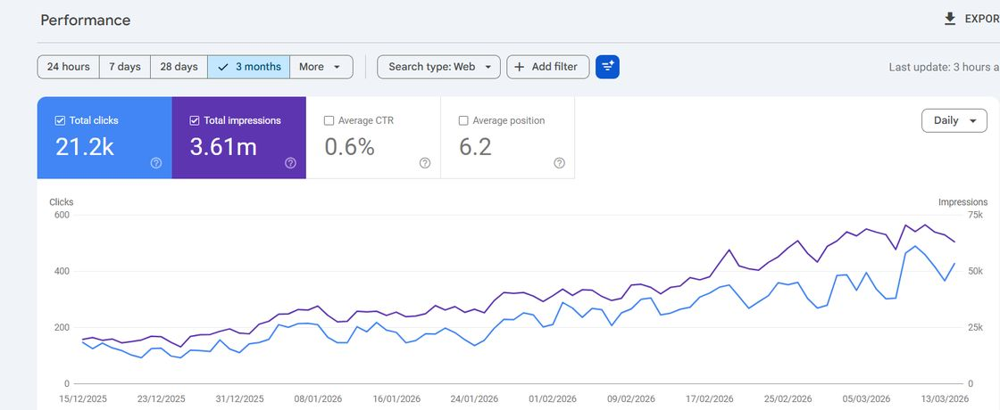
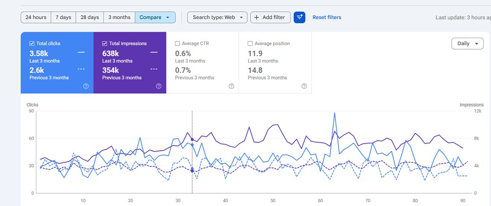

The method
Most SEO burns your budget in the wrong order. I fix that first.
Most organic growth stalls for one reason at a time, not ten. I diagnose the single constraint between demand, trust, and conversion, then sequence the fixes so the system compounds instead of leaking.
How does Muhammad Haseeb Sheikh approach SEO?
He works constraint-first: rather than doing many SEO tasks at once, he finds the single factor capping a site's organic growth and fixes issues in the order that compounds. The method runs technical baseline, then constraint diagnosis, then intent-mapped content, then execution, then measurement. This sequencing is the core skill, because most SEO fails from doing the right things in the wrong order.
Volume is not a strategy.
A system grows only as fast as its tightest constraint allows.
You can publish more, build more links, and chase more keywords, and still flatline, because none of it touches the one thing actually holding growth back. The work is to find that thing first.
The default approach
- Publish more content and hope something ranks
- Chase keyword lists detached from real intent
- Build links before the page deserves them
- Measure activity: posts shipped, words written
- Treat every channel as equally broken
The constraint method
- Find the single limiter between demand, trust, and conversion
- Map real buying intent to the pages that should win it
- Earn authority only where it changes a decision
- Measure outcomes: qualified demand, position, revenue signals
- Fix in sequence, so each step makes the next cheaper
Five phases. Each one earns the next.
Nothing ships until the diagnosis says it should. The first deliverable is never a task list, it is a decision map: what to fix, what to build, what to ignore, and why.
Diagnose
I map where real demand and intent live, then audit the system that is meant to capture them: technical access, content-to-intent fit, authority, and the conversion path. The output is the constraint, the single layer doing the most damage to growth.
Prioritize
Everything that could be done is ranked by leverage, not by checklist. Budget and effort go to the fixes that relieve the constraint first, so nothing is spent on work the constraint would have blocked anyway.
Architect
Before anything is written or built, the structure is set: which queries map to which pages, where proof and trust signals sit, and how internal links pass authority to the pages that need to win.
Execute
Technical, content, and conversion changes ship in the order the map dictates. You see movement, not activity, because every release is tied to the constraint it is meant to relieve.
Measure and refine
Outcomes are tracked against targets, not vanity metrics. What compounds is reinforced and what does not is cut. The system keeps paying back after the engagement, because it is built to.
The same six layers, in every market.
The industry changes. The places growth gets stuck do not. The diagnostic checks each layer and names the one doing the most damage right now. Together they cover the four constraints named across this site: demand, technical access, trust and conversion.
Demand and intent
What people actually search, and the intent behind it. Growth starts by mapping real demand, not assumed keyword lists.
Technical foundation
Crawl, index, speed, structure. If search engines cannot access the site cleanly, nothing built on top of it compounds.
Content architecture
Pages mapped to intent and structured so each one has a job, and somewhere to pass its authority.
Authority and trust
Reputation, links, reviews, and proof, earned where they change a decision rather than collected for vanity.
Conversion paths
The route from landing to action. Visibility is wasted if the page cannot convert the intent it earned.
Measurement
The feedback loop. Outcomes against targets, so the system can be steered instead of guessed.
Decisions you can act on, not a report you file.
The single layer capping growth, with the evidence behind the call.
Every fix, sequenced by leverage, so budget goes to the right thing first.
Query-to-page structure, proof placement, and the internal-link plan.
Technical, content, and conversion work, released in order with a clear changelog.
Outcomes against targets, so you can watch the system compound.
The same method, different clients.
Figures shown from Search Console, published with permission, with account URLs cropped from every screenshot. These happen to be healthcare practices, where recent work has clustered. The method does not change with the industry; only the constraint does.

From page two to page one in six months
Rebuilt the intent-to-page architecture and local trust signals. Over six months, organic clicks moved from 7.65k to 48.2k and average position from 19 to 6.5, and the Business Profile logged 891 calls in January to March 2026, up 19.4% year on year. The full story is in the healthcare SEO case study.
The 21.2k badge covers the first three months of the run (15 December 2025 to 13 March 2026). The six-month figures are the full before-and-after comparison.

From mid page two onto page one
A membership-model practice that barely appeared in search. Condition and service pages were built and mapped to local intent, and average position moved from 14.6 onto page one at 8.6.

Remapping intent lifted clicks and impressions in one quarter
Content existed but did not match how patients actually searched. Remapping pages to real intent lifted clicks 38% and impressions 80% against the previous quarter, with average position improving from 14.8 to 11.9.

An early-stage build from a near-zero base
Starting close to invisible, the foundation was set first. In six months impressions grew almost fourfold and clicks two-thirds; the compounding phase is just beginning.
What I will not do.
See where your growth is constrained.
A short diagnostic returns a clear read on the one thing capping your organic growth, before any larger commitment.
Hiring for a role? I am open to senior and lead SEO positions, full-time or contract. Email me for a resume tailored to the role, or connect on LinkedIn.